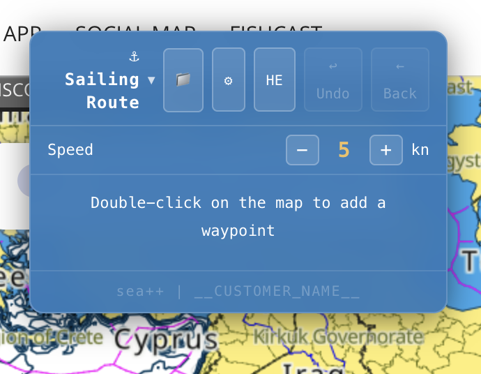
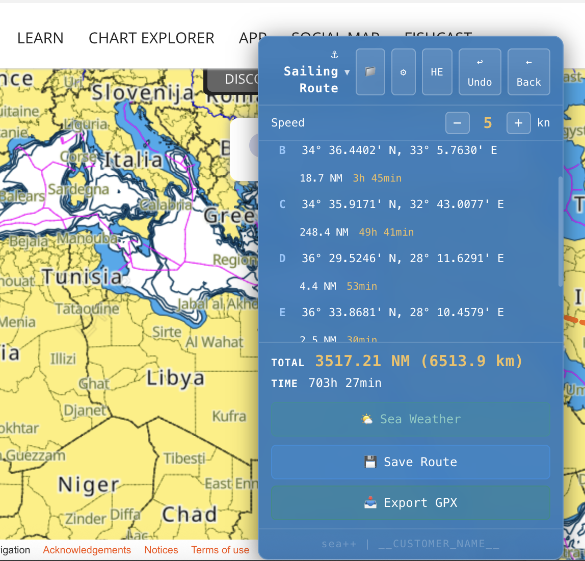
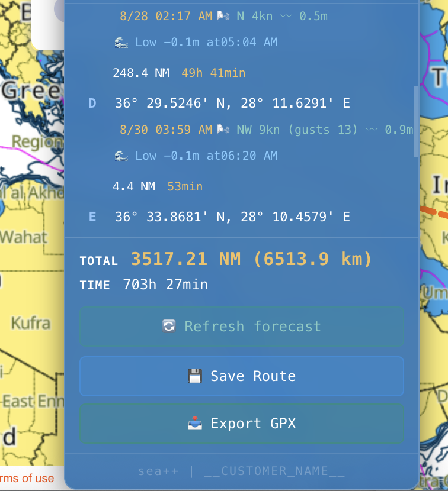
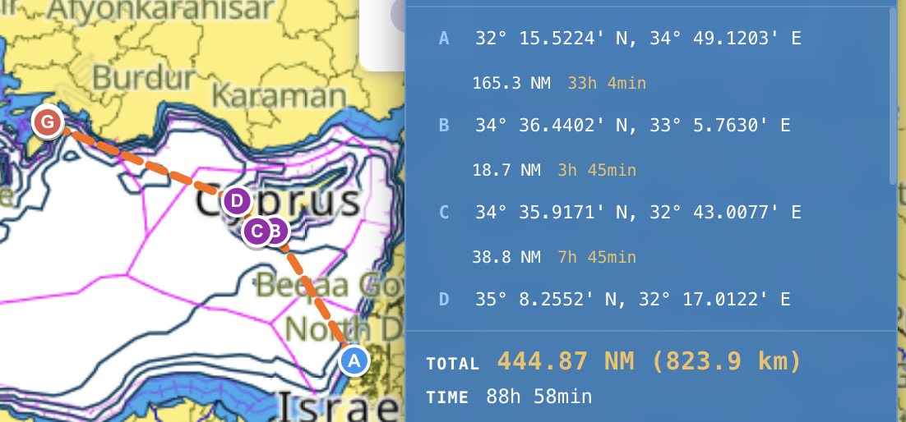
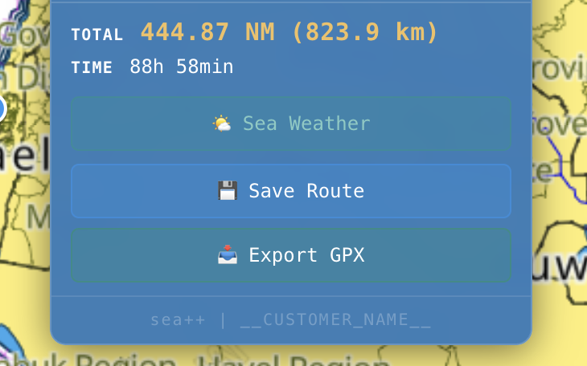

Maritime Route-Planning Extension
A Chrome browser extension for planning a sailing route or any other maritime activity

The extension is designed to plan a sailing route or any other maritime activity.
The extension works with the C-Map charting site and with maps on the Navily site.
Route planning is done by clicking on the map with your mouse - each click is a point on the route (important: make sure the route doesn't cross onto land).

From the second point onward, you can see the following details:
- Distance between points (depending on your speed, in knots).
- Expected weather forecast at time of arrival.
- High or low tide at time of arrival.

Additional Things You Can Do
- Change your vessel's speed - the extension automatically updates arrival times (distance stays the same, of course).
- Save a route, load a route, update a route, and refresh the weather forecast.
- Hebrew and English interface.
The Most Efficient Way to Work With the Extension
Before heading abroad, build a route and save it. It will be built with the current dates.
A day before, or on the morning of the sail, load the route - it will adjust itself to the current dates, and update the forecast, tide, and low tide accordingly.

Installing the Extension
The extension is installed on the Chrome browser.
After installation, a one-time update is required in order to see all the data.
In addition to working with Chrome (on your computer), you can export a GPX file and upload the route(s) to Navionics on mobile.
Along with the extension, you'll receive a detailed guide file about how to use it.

Extension price: a one-time payment of ₪100.
(20% discount for Sailor club members or students).
This extension shines at building routes for maritime activity - like the sailor that I am.
I can also adapt the product for land-based activity routes.
As well as build extensions for websites that help you work more conveniently and efficiently with a site, tailored to your needs.